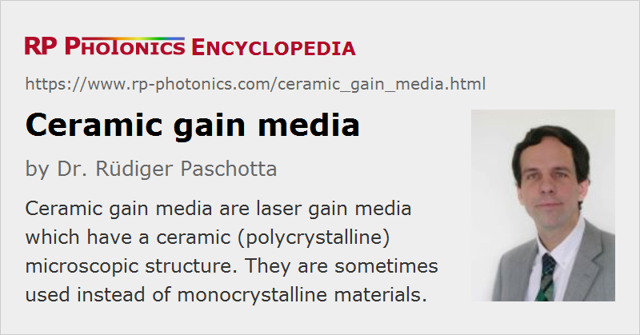

Ceramic Gain Media
Definition: laser gain media which have a ceramic (polycrystalline) microscopic structure
More general term: solid-state gain media
German: keramische Verstärkungsmedien
Categories: optical materials, lasers
How to cite the article; suggest additional literature
Author: Dr. Rüdiger Paschotta
Traditionally, solid-state gain media have been made either of crystals or glasses. In the case of crystals, these were typically single crystals, because polycrystalline media usually exhibit strong scattering at domain boundaries. However, beginning in the 1990s, scattering losses of polycrystalline media with very small domains – called ceramics – have been greatly reduced with refined fabrication techniques, in particular with vacuum sintering. When the procedure is started with very small particles in the powders used and a refined treatment generates nanoparticles with a well-controlled size distribution, very small crystallites and very low porosity result, leading to scattering losses which are not significantly larger than for single crystals. This has been achieved in particular for YAG (yttrium aluminum garnet). Neodymium-doped YAG ceramics now allow for essentially the same laser efficiency as Nd:YAG single crystals. The same holds for some ytterbium-doped gain media. Ceramics are also suitable for vibronic laser gain media such as Cr2+:ZnSe.
Ceramic laser gain media offer a number of important advantages over single crystals:
- Their fabrication can be significantly cheaper, particularly for large pieces.
- Ceramic gain media can be fabricated with arbitrary shapes and size, whereas single-crystal growth techniques (e.g. the Czochralski method) set limits on the possible size.
- Ceramics are well suited to produce composite gain media, consisting e.g. of parts with different doping levels, or even different dopants. It is also possible to include a saturable absorber section for passive Q switching [11].
- Spatially varying doping profiles are relatively easily possible. These aspects give additional freedom in laser design.
- For neodymium-doped and ytterbium-doped YAG ceramics, a significantly higher doping concentration can be achieved without quenching effects degrading the laser efficiency.
- Some optical materials, e.g. yttria (Y2O3), scandia (Sc2O3) and other sesquioxides with their high melting temperatures, are very difficult to grow into single crystals, and much easier to obtain in ceramic form, because the sintering temperature can be much lower than the melting temperature [8]. The high thermal conductivity of Y2O3 and Sc2O3 could make these materials preferable to YAG.
For these reasons, it is conceivable that ceramic gain media will in many cases replace single crystals, particularly in high-volume applications and those which need large gain media.
Note that ceramics are interesting for laser construction not only when used as gain media. Some ceramic media, such as aluminum nitride ceramic, have a very high thermal conductivity while being excellent electrical insulators. This makes them interesting for heat sinks of high-power laser diodes.
Suppliers
The RP Photonics Buyer's Guide contains 1 supplier for ceramic gain media.
Questions and Comments from Users
Here you can submit questions and comments. As far as they get accepted by the author, they will appear above this paragraph together with the author’s answer. The author will decide on acceptance based on certain criteria. Essentially, the issue must be of sufficiently broad interest.
Please do not enter personal data here; we would otherwise delete it soon. (See also our privacy declaration.) If you wish to receive personal feedback or consultancy from the author, please contact him e.g. via e-mail.
By submitting the information, you give your consent to the potential publication of your inputs on our website according to our rules. (If you later retract your consent, we will delete those inputs.) As your inputs are first reviewed by the author, they may be published with some delay.
Bibliography
| [1] | E. Carnall et al., “Optical studies on hot-pressed. polycrystalline CaF2 with clean grain boundaries”, Mater. Sci. Res. 3, 165 (1966) |
| [2] | A. Ikesue et al., “Fabrication and optical properties of high-performance polycrystalline Nd:YAG ceramics for solid-state lasers”, J. Am. Ceram. Soc. 78, 1033 (1995), doi:10.1111/j.1151-2916.1995.tb08433.x |
| [3] | J. Lu et al., “Optical properties and highly efficient laser oscillation of Nd:YAG ceramics”, Appl. Phys. B 71, 469 (2000), doi:10.1007/s003400000394 |
| [4] | G. A. Kumar et al., “Spectroscopic and stimulated emission characteristics of Nd3+ in transparent YAG ceramics”, IEEE J. Quantum Electron. 40, 747 (2004), doi:10.1109/JQE.2004.828263 |
| [5] | J. Lu et al., “Neodymium doped yttrium aluminum garnet (Y3Al5O12) nanocrystalline ceramics – a new generation of solid-state laser and optical materials”, J. Alloy. Compd. 341, 220 (2002) |
| [6] | Y. Qi et al., “Nd:YAG ceramic laser obtained high slope-efficiency of 62% in high power applications”, Opt. Express 13 (22), 8725 (2005), doi:10.1364/OPEX.13.008725 |
| [7] | L. D. Merkle et al., “Concentration quenching in fine-grained ceramic Nd:YAG”, Opt. Express 14 (9), 3893 (2006), doi:10.1364/OE.14.003893 |
| [8] | J. Kong et al., “High-efficiency 1040 and 1078 nm laser emission of a Yb:Y2O3 ceramic laser with 976 nm diode pumping”, Opt. Lett. 32 (3), 247 (2007), doi:10.1364/OL.32.000247 |
| [9] | T. Taira, “RE3+-ion-doped YAG ceramic lasers”, JSTQE 13 (3), 798 (2007), doi:10.1109/JSTQE.2007.897174 |
| [10] | J. Dong et al., “Laser-diode pumped heavy-doped Yb.YAG ceramic lasers”, Opt. Lett. 32 (13), 1890 (2007), doi:10.1364/OL.32.001890 |
| [11] | J. Dong et al., “Composite Yb:YAG/Cr4+:YAG ceramics picosecond microchip lasers”, Opt. Express 15 (22), 14516 (2007), doi:10.1364/OE.15.014516 |
| [12] | M. O. Ramirez et al., “Three-dimensional grain boundary spectroscopy in transparent high power ceramic laser materials”, Opt. Express 16 (9), 5965 (2008), doi:10.1364/OE.16.005965 |
| [13] | A. Ikesue and Y. L. Aung, “Ceramic laser materials”, Nature Photon. 2, 721 (2008), doi:10.1038/nphoton.2008.243 |
See also: gain media, laser crystals versus glasses, neodymium-doped gain media, high-power lasers, optical materials, scattering
and other articles in the categories optical materials, lasers
|  |
If you like this page, please share the link with your friends and colleagues, e.g. via social media:
These sharing buttons are implemented in a privacy-friendly way!